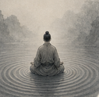

Cuando aparece la necesidad de detenerse
Hoy en día, muchas personas sienten que han perdido la conexión consigo mismas. Tienen objetivos, responsabilidades y una agenda llena de compromisos, pero el ritmo es alto, el tiempo pasa deprisa y aparece una sensación difícil de definir: estar, pero no estar del todo.
En ocasiones, situaciones personales, familiares o laborales hacen que todo se tambalee. Son momentos de crisis en los que surge una pregunta inevitable: ¿qué hago yo aquí? ¿Quién soy realmente?
Pero estas preguntas no pertenecen solo a los momentos difíciles. Pueden aparecer en cualquier momento, de forma espontánea, como una expresión natural del asombro ante todo lo que desconocemos, empezando por nosotros mismos.
En ese punto, muchas personas se acercan por primera vez a la meditación. No como una técnica compleja, sino como una forma de detenerse y empezar a mirar hacia dentro.
Qué es meditar
Cuando una persona empieza a meditar, lo más habitual es que se sienta confusa. No sabe exactamente qué busca ni por dónde empezar. Y, sin embargo, ese no saber es el mejor comienzo. En el zen se habla de la “mente del principiante”: una actitud abierta, sin certezas, pero con una decisión clara de explorar.
Esa determinación, aunque sea sencilla, es esencial.
La meditación invita a detenerse y a mirar hacia dentro. No es una técnica complicada, sino un ejercicio consciente de la atención. A través de la práctica, poco a poco, se aprende a cultivar el silencio con paciencia y delicadeza.
El zen es de pocas palabras porque la experiencia no puede explicarse del todo. Desde el primer día, meditar es algo personal, una vivencia directa que cada uno recorre a su manera.
Se puede meditar de muchas formas: sentado, de pie, caminando o incluso en las tareas cotidianas. Todas ellas son formas de entrenar la atención y de estar más presente.
En el fondo, meditar no es aislarse del mundo, sino abrirse a la vida tal como es.
El primer paso para empezar a meditar
Si quieres empezar a meditar, puedes comenzar por algo muy sencillo: hacerte una pregunta honesta.
No hace falta responderla inmediatamente. Puedes mantenerla durante un tiempo en tu interior, como si fuera algo valioso. Cada vez que aparezca, en lugar de analizarla con razonamientos, prueba a sentirla con todo el cuerpo, en silencio.
Este primer paso ya es una forma de meditación.
Reserva pequeños momentos de intimidad y recogimiento. No tienen que ser largos ni perfectos. Lo importante es crear un espacio donde puedas detenerte y observar sin prisa.
A medida que avanzas, puede ser útil encontrar a alguien que te acompañe en el aprendizaje: una persona o un entorno que te inspire confianza y con el que sientas afinidad.
Aprender a meditar es una experiencia personal. Requiere continuidad, cierta perseverancia ante las dificultades y una determinación tranquila. No es una actividad de moda ni una técnica para alcanzar objetivos rápidos, sino una forma diferente de relacionarse con uno mismo, con los demás y con la realidad.
Dificultades normales al empezar
Cuando una persona empieza a meditar, especialmente si es principiante, lo más habitual es encontrarse con dificultades.
La primera es algo muy simple: reservar un tiempo. Igual que ocurre con el ejercicio físico, entrenar la mente requiere un espacio diario. Y no siempre es fácil encontrarlo.
La segunda dificultad es la continuidad. Al principio aparece la confusión. Se avanza por un camino que no se conoce hacia un lugar que tampoco está claro. Como consecuencia, surgen la impaciencia, la inconstancia e incluso la desconfianza.
Todo eso es normal. De hecho, podría decirse que forma parte del proceso. No significa que se esté haciendo mal, sino que es necesario sostener la práctica, reunir las propias fuerzas y seguir.
Cultivar el silencio no es algo inmediato. Requiere tiempo, repetición y muchos pequeños pasos en la misma dirección. A todos nos ha pasado.
Poco a poco, sin forzar, empieza a aparecer una mayor claridad. Y con ella, también llegan respuestas, aunque quizá no de la forma a la que estamos acostumbrados.
Una idea para recordar
La meditación abre un camino de transformación personal orientado hacia algo muy sencillo y muy profundo: conocerse con honestidad.
A través de la práctica, la atención se convierte en comprensión, la comprensión en reflexión y, poco a poco, esa claridad se traslada también a la forma de actuar. Es un proceso de ida y vuelta entre lo que vemos dentro y cómo vivimos fuera.
Despertar no es algo lejano ni extraordinario. Es empezar a ver con más claridad: reconocer los propios automatismos, cuestionar las ideas que damos por hechas y descubrir hasta qué punto muchas de nuestras percepciones están condicionadas.
Ese proceso no nos aleja de la vida, sino que nos acerca a ella. La meditación cultiva el silencio, unifica la experiencia y favorece una forma de vivir más consciente, más ética y más abierta a los demás.
En quietud o en movimiento, en los momentos más simples del día, la práctica consiste en cultivar la atención y estar presentes. No hace falta nada especial, porque la base ya está en cada persona.
En ese sentido, meditar es volver a algo esencial que ya existe, y aprender a reconocerlo.
Puedes continuar con una lectura simbólica en El Camino del Practicante.
